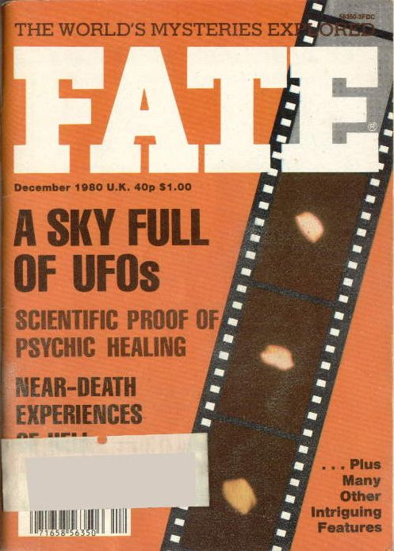

Couverture de Fate ce mois-là, titrant sur "un ciel rempli d'ovnis"

À Hessdalen
(Norvège), début d'une longue vague d'observations de phénomène curieux, essentiellement des boules jaunes,
de puissantes lumières blanc-bleu et des groupes de lumières multicolores, voire des objets non lumineux visibles de
jour seulement. Les trajectoires peuvent être diverses ; les phénomènes sont enregistrés sur divers appareils,
parfois au radar.
Au sud-est de Londres et dans le Kent
(Royaume-Uni), de nombreux témoins, dont Timothy Good, observent 1 phénomène
volant lumineux de forme conique. L'avant est rouge, le centre argenté et l'arrière bleu étincelant.
Une chaîne de télévision anglaise diffuse un court extrait d'un film de 30 mn tourné près
de Sevenoaks (Kent) montrant l'objet inconnu de l'avant-veille. Le film est authentifié
par 15 témoins.
Les radars de la base RAF de Watton (Norfolk) perçoivent un inconnu survolant la mer du Nord en direction de la
côte. Il disparaît des écrans aux alentours de la forêt de Rendlesham. À peu près au même moment, près de cette
forêt, les agents de sécurité à la porte de la base USAF de la RAF de
Woodbridge voient des lumières descendre du ciel vers les arbres. On leur accorde la permission d'enquêter et
ils quittent la base dans une Jeep.
Incident de
Rendlesham : alors qu'il sert en tant que commandant de base à la Base Aérienne de Bentwaters dans le sud de
l'Angleterre, le colonel Charles I. Halt observe et enquête sur divers objets
anormaux apparus dans le ciel de la Forêt de Rendlesham. Les observations interviennent en 2 nuits distinctes
lors de la semaine suivant Noël.